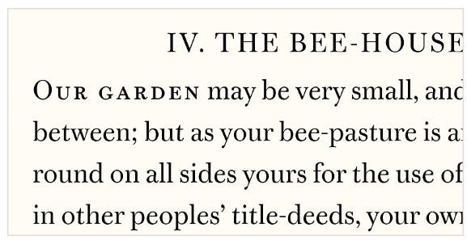
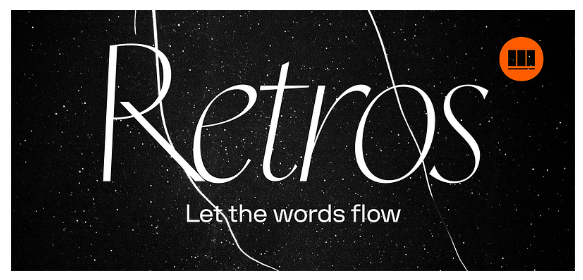
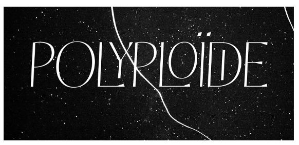

Font Types Article
Within typography, there are different categories of font types, each with distinct characteristics and uses. Understanding these differences is crucial for effective design and communication. Once you learn more about each category, you'll be able to spot their uses in real-world applications such as design projects and websites and be better equipped to make your own informed decisions about font selection for your designs.
Serif Fonts
Serif fonts are traditional fonts that are characterized by small lines or strokes attached to the ends of their letters. A serif font is commonly used in print media such as books, newspapers, and magazines. Examples of serif fonts include Times New Roman, Georgia, and Garamond. They are known for their readability and are often used in body text to make it easier for readers to digest longer form writing.
This font is called Warbler, which can be downloaded from Adobe Fonts here.

Sans-Serif Fonts
Sans-serif fonts are modern fonts that do not have the small lines or strokes attached to the ends of their letters. Examples of sans-serif fonts include Arial, Helvetica, and Futura. They are known for their clean and simple appearance and are often used in headings and titles to create a bold and impactful look. These fonts are preferred for their clarity in digital mediums.
This font is called Retros, which can be downloaded from Adobe Fonts here.

